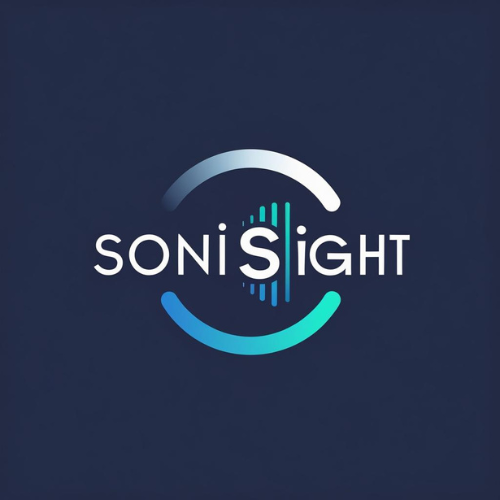

Congressional App Challenge
SoniSight
by Paul Rowe
AI-powered breast ultrasound diagnostics — detecting the unseen so doctors can see more clearly.
The Builder
About Me
I'm Paul Rowe, a high schooler passionate about the intersection of computer science, machine learning, and healthcare. I started coding because I wanted to make things that actually matter, like software that helps real people navigate real problems.
SoniSight was born from a personal place: my mother's experience with uncertain biopsy results and the anxiety that comes from waiting on ambiguous imaging. I wanted to explore whether AI could bring more clarity, as well as more peace of mind, to that process.
The App
What is SoniSight?
SoniSight is a diagnostic web application that analyzes breast ultrasound images using computer vision and AI, identifying whether a mass appears normal or suspicious, and explaining why.
It's not a replacement for a radiologist, but a fast, accessible, and explainable second opinion.
Inspired by my mother's experience with uncertain biopsy results, and built to help bridge the gap between raw imaging data and human understanding.
Under the Hood
Tech Stack
See It in Action
Demo
Explore
Links
Try the live app, browse the code, or check out the dataset used to train and test the model.